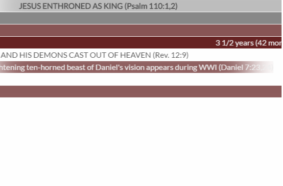

Life Gems Select a project below

Bible Timeline
A timeline of events, lifespans, and details regarding biblical information.
Israelite King Profile
Compare king to king for the Nation of Israel. Learn their ages as they ruled, the prophets and high priests, and major events of what has occured during the reigns.
Prophetic Kings of Daniel 11
Comb through the prophecy of the kings of the North and South as seen in Daniel's vision of chapter 11 of the book bearing his name. Understand why a king is mentioned and what happened historically to fulfill prophecy.

Prophecies of the last days
See all of the prophecies pertaining to 1914 and onward. View how Jehovah has prepared his people for a new millenium of kingly reign.